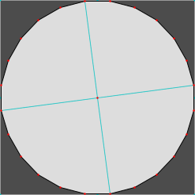

Circles and Weland’s Custom Grid
For the purposes of this tutorial, we’ll take the term ‘circle’ to mean ‘regular polygon with sufficiently many sides to look circular’. Aleph One is not actually capable of curves.
There are a few ways to construct circles in Weland. The simplest is probably to use shift+alt and draw points of equal length out from a central area. This will give you a regular 16-sided polygon, and for many cases, this is all you’ll need. However, in many cases, you may want more points. There are a few options here. There’s a circle plugin, which is fine if you’re OK doing a bit of math. (To get this to load on Windows, you may need to go to ‘Properties’ and select ‘Unblock’ next to ‘Security’. Obviously, don’t make a habit of doing this with just any software downloaded from the Internet unless you trust the authors.) Another option that doesn’t require a plugin (but still requires a bit of math) is the custom grid, this little icon you may not have bothered to try out before:

When you click it, it brings up some sliders that may at first look intimidating. (I’ve resized parts of this image to make its contents legible, but it’s otherwise untouched.)
- Reset: Restores the default grid settings.
- Rotation: How much to rotate the grid, from 0° to 90°. (90° is slightly inaccurate; stick to 0° instead.)
- Scale: The amount by which to multiply the size of the standard grid, from 0.125 (one-eighth) to 8.
- Origin: The point around which to center the grid’s rotation and scale. This is input using internal units (1,024 IU = 1 WU), so −32,768 (−32 WU) to 32,767 (≈31.999 WU).
- 1, 2, 3, 4, 5, 6: Grid presets. 2 through 6 persist after you quit Weland, apart from the origin point (use them for the grids you use most often); 1 resets when you exit.
- If you select a line, ‘Reset’ becomes ‘Set All’, which sets the Rotation, Scale, and Origin to match, respectively, the line’s angle, its length (give or take an internal unit), and its origin point (i.e., the first point drawn); likewise,
- Clicking ‘Set’ for ‘Rotation’ matches the line’s angle.
- Clicking ‘Set’ for ‘Scale’ matches the line’s length (again, give or take an internal unit).
- Clicking ‘Set’ for ‘Origin’ matches the line’s origin point.
- Similarly, clicking ‘Set’ with a point selected sets the point as the origin.
- Therefore, if you need to set a custom Origin, make sure you have neither a line nor a point selected; if you need to set a custom Rotation or Scale, make sure you don’t have a line selected.
For our ‘circle’, Origin will match its center and Scale will match its radius (at its vertices, anyhow). Rotation will vary, as we’ll see. I’ll demonstrate how to draw a 24-sided circle. We’ll leave Origin as 0, 0. We’ll start Rotation from 0°. For Scale, we’ll use the seemingly random number 3.831. Press 4 on the keyboard to get the grid to show at 1x size, then draw points out from (0, 0) in all four cardinal directions. We should have something like:
Protip: If you’re having trouble finding (0, 0), you can rotate the grid forward and backward (it always rotates around the center point); or edit one point by double-clicking it; or start from 15° and work back around to 0°. (Again, I don’t recommend using a Rotation of 90°; it’s not quite accurate.)
From here, we must rotate the grid by regular increments (this might be the trickiest part). 360° (a circle’s full rotation) divided by 24 points (our vertex count) gives us 15° increments, so our next angle is 15°. Set Rotation to 15° and draw lines out from the center. Rotating another 15° gives us 30°, then 45°, then 60°, then 75°. (We could do this with fewer rotations, but we’ll save that for later.) Here are visuals of all these steps:
We now have our circle’s points. Our next step is to draw our lines. It’ll probably help to disable the grid or to reduce the grid size (i.e., press 1 on the keyboard).
The next task is to fill the circle (assuming we wish to do that). It’s an inefficient allocation of map indices to fill all 24 triangles when we can use more sides per polygon; here, we can divide our circle into quadrants to get eight sides per polygon, which is perfect.
Now, some notes:
- If we select one of our circle’s outer lines, we’ll see why 3.831 was our Scale: they’re all 1 or 0.999 WU long. A long list of radii and rotations that produce 1 WU-long sides can be found below.
- Not using the center as one of our vertices could, in some cases, allow us to fill our circle with fewer polygons; however, it could also result in acute angles, which often cause bouncy walls. In this specific case, four polygons is the fewest we could get away with.
- I mentioned Shift+Alt constraint as a way to create 16-sided polygons. You can combine this with grid rotation if the number of sides is a multiple of 8 (divides evenly into 45°, i.e., use 8 of the 16 Shift+Alt angles) or 16 (divides evenly into 22.5°; i.e., use all 16 Shift+Alt angles). As the math might confuse people at first, I avoided showing this above, but it can save time once you’re comfortable with this method.
- Points may be off by an internal unit (≈.001 WU) or two. Adjust them manually if this bothers you. Drawing our lines from the center with Shift+Alt constraint makes this slightly less likely.
- Since we started at 0°, we don’t have any horizontal or vertical lines in our circle. To get them, we’d divide our grid rotation of 15° by 2 for a starting angle of 7.5°, then increase that by 15 (i.e., 22.5°, 37.5°, 52.5°, 67.5°, 82.5°). The result is below. Note that getting both horizontal and vertical lines requires a number of sides divisible by 4. If it’s divisible by 2, we’ll get one but not the other. If it’s an odd number, we’ll get only a single horizontal or vertical side.

- If our number of vertices is not a multiple of 4, we’ll still start at 0° as usual, keep adding our angle increment until we exceed 90°, subtract 90° from our Rotation, and then continue as before. We also won’t draw lines in all four directions – we’ll either draw them in two directions (if our number of vertices is a multiple of 2) or one (if it isn’t).
Radii and Rotations to Create 1 WU
These radii and rotations create regular polygons with sides of 1 WU in length. (Including a triangle may seem pointless, but this is a fast way to draw an equilateral triangle centered around a desired point.) Italic numbers are divisible by 8 (i.e, you can use Shift+Alt with 45° angles); bold numbers, by 16 (22.5° angles). 1 WU = 1,024 Internal Units; I included these for the circle plugin. It produces slightly different results, so they differ slightly.
(Click a category in the table header to sort by that category. Click it again to reverse the sort direction.)
| # Sides | WU Radius | IU Radius | Rotation |
| 3 | 0.578 | 591.3 | 120.0° |
| 5 | 0.852 | 871 | 072.0° |
| 6 | 1.000 | 1024 | 060.0° |
| 7 | 1.153 | 1180 | 051.42857142…° |
| 8 | 1.306 | 1338 | 045.0° |
| 10 | 1.618 | 1657 | 036.0° |
| 12 | 1.934 | 1978 | 030.0° |
| 14 | 2.247 | 2301 | 025.71428571…° |
| 16 | 2.563 | 2624 | 022.5° |
| 18 | 2.880 | 2948 | 020.0° |
| 20 | 3.197 | 3272 | 018.0° |
| 24 | 3.831 | 3922 | 015.0° |
| 28 | 4.467 | 4574 | 012.85714285…° |
| 32 | 5.102 | 5224 | 011.25° |
| 36 | 5.735 | 5873 | 010.0° |
| 40 | 6.372 | 6525 | 009.0° |
| 42 | 6.690 | 6851 | 008.57142857…° |
| 44 | 7.008 | 7176 | 008.1818…° |
| 48 | 7.647 | 7830 | 007.5° |
| 52 | 8.283 (use 4.142) | 8482 | 006.92307692…° |
| 56 | 8.918 (use 4.459) | 9130 | 006.42857142…° |
| 60 | 9.558 (use 4.779) | 9780 | 006.0° |
| 64 | 10.190 (use 5.095) | 10435 | 005.625° |
| 72 | 11.468 (use 5.734) | 11740 | 005.0° |